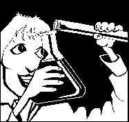
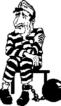

| Ethics Dictionary | Conditions Formulas | PTS Glossary | FAQs |
|
|
| Ethics Dictionary | Conditions Formulas | PTS Glossary | FAQs | |
Note: This chapter is from 'The Road to Clear", Level
4.
Living with Right and Wrong
You have read a lot about service computations and about the insisting upon being right, 'make wrong' and evil intentions. But let us for a moment look at all this from an everyday perspective. How do we deal with this outside the auditing situation? There are certain data that apply to this and certain conduct you can adopt to deal with this in an everyday setting in a much better way.
It's a well known fact that rightness and wrongness are the basis for endless arguments and struggles.
Rightness and wrongness are a very dominant pair of considerations in all human activity. It reaches very high and very low on the tone scale.
|
To really know who is right |
You can see the insistence upon "I am Right and they are wrong" goes way down and be the last hard fought idea by a person who is very unaware of just about anything else. Things are not made easier by that rightness and wrongness is very much dependent upon who is viewing it. It depends upon moral codes and values. It depends upon what groups one belongs to and what groups one are naturally opposed to. It can depend on future and unknown consequences of an action. The law defines 'sanity' as the ability to tell right from wrong, but even that is based on opinion.
When you realize that the common goal for all activities in life is survival things become a little clearer. It isn't new that things seek to survive. The new realization is, that this is really the only thing all life impulses seek to do. It is not only the thing humans have in common with the smallest insect or weed. It is also the power and pulse and ever present intention in every human activity.
To understand that fully you have to realize, that we operate on eight dynamics.
Survival isn't only seen as "survival of the fittest", the formula Darwin made famous. Man's basic goodness is that he ultimately seek all life forms to succeed. That doesn't mean he won't defend and fight for his obvious interests, such as his own children, spouse and friends. But given no or little hostile opposition from other people or life forms, he wishes them well - he wishes they will survive. In the long run this also guarantees his own survival. There will be animals to hunt and crops to harvest and friends to be made in the future if he takes care of other people, life forms and nature today.
When we have isolated survival on
the eight dynamics as the dynamic force behind life we can suddenly define an
overt act in a much more meaningful way. In religion, such as the Christian
Church, it is called sin, but the Church defines it based on the Ten
Commandments and other moral codes and rules from the Bible. This is defined on
the basis of Divine Law and authority rather than reason.
But a true overt act can actually be defined in terms of reason when we start
with survival as the common goal and effort by which all life impulses are
motivated. The true definition of an overt act is not just injuring someone or
something: an overt act is an act of omission or commission which does the
least good for the least number of dynamics or the most harm to the
greatest number of dynamics. A wrong action is wrong if it harms the
greatest number of dynamics. And a right action is right if it benefits the
greatest number of dynamics. This actually defines ethical behavior as
different from moral behavior. Moral behavior is to follow the rules. Ethical
behavior is to seek to do the greatest good to the greater number of dynamics.
Some people say, an action is an overt (or sin) simply because it is
destructive. To them all destructive actions or omissions are overt acts. But a
failure to destroy something harmful can be an overt act as well. To help
something that would harm a greater number of dynamics can be an overt act.
The idea of not harming anything and helping everything are both faulty. The
destruction of a disease is not an overt act. To help criminals commit a
crime is an overt act.
Right and Wrong
There are no absolute right or absolute wrong in this world. Since it is a
matter of viewpoint and convictions - and even a bit of luck as in the case of
predicting what future effects some action is going to have - a lot of opinions
and false data get into right and wrong. Crystal balls, astrology, gut feeling
and so on. Being right does not mean being unwilling to harm and being wrong
does not mean not harming anything. You have people "who can't kill
a fly", but they are not considered to be superior in terms of rightness,
but merely good tempered and sometimes ineffective.
There is a strong impulse in all of us, to try to be right. This is an
insistence and impulse which easily gets separated from doing the right action.
Because it casts a long shadow which is the effort to make others wrong. You see
this in people who are criticizing everybody and everything. We see
"defensive persons" trying to justify and explain away the most
terrible actions or wrong conditions. Most attempts to explain own conduct, no
matter how wild, seem perfectly right to the person doing it since he or she is
only insisting upon their own rightness and others wrongness.
 |
Scientists, who are not getting |
We have long known that something which is not admired tends to persist. If no
one admires a person for being right then that person's "brand of being
right" will persist, no matter how mad it sounds. Scientists who are
aberrated cannot seem to come up with many new theories. They are only
interested in insisting on their own pet theory and supporting that instead of
keep looking for and finding the actual truth.
You will hear some very odd discussions and arguments in society. These are
fueled by individuals who are more interested in asserting their own
rightness than truly seeking to be right.
An individual tries to be right and fights being wrong. These
impulses exist independent of anything being true or not. An individual insists
as a matter of principle and out of personal pride, independent of the subject,
the obvious, or the evidence at hand.
The impulse to always be right is often with an individual as his last
living thought.
If he thinks of that every living moment how can an individual ever be wrong?
It starts with he does a wrong action, accidentally or through oversight. The
wrongness of the action or inaction is then in conflict with his need to be
right. So he can be seen to repeat the wrong action to prove it is right.
This is a basic aberration. All repeated wrong actions are the result of an
original error - but then followed by an insistence on having been right.
Instead of admitting the mistake he insists upon that the error was no mistake
and to prove it he repeats it.
As a person goes down scale it gets harder and harder for him to admit to having
been wrong. Such an admission could be disastrous to any self respect, ability
and sanity.
Rightness becomes the same as survival. This of course has a lot of truth to it.
But as one is less and less capable it becomes a blind insistence. To believe
for a moment one has been wrong is to face being wiped out. The last defense of
any being is "I was right". This is true for anyone. When that defense
crumbles, the lights go out.
That is why punishment and correction is no easy matter. The criminal will
defend his actions and boast about them. A neurotic or psychotic patient being
'corrected' will know to fight for their right to be the way they are or being
different. Instead of being able to bring about an improvement you all too often
see things turn into a battle between right and wrong and the outcome of such a
stand-off is that things turn to the worse.
But there is one way open. You can approach these things in a way
as to bring about more livable conditions.
The repeated and "incurable" wrongness came about as a last defense
of: "trying to be right".
Therefore the compulsive
wrongness can be
cured no matter how mad it may seem by:
Rehabilitating the person's
ability to be right!
If you have the person explain what is right about their way of going about things you are starting out right. You see, this has even been in the Auditors Code all along.
This has wide applications - in marriage and friendship. At work and casual social contact. In law and in dealing with children.
Example: A wife is always using too many spices in her cooking. Despite angry arguments, threats of divorce, anything, it does not change. Her compulsion continues. One can change this wrongness by having her explain what is right about her cooking. This may start a new heated argument in some extreme cases, but if one goes ahead and flattens the question, it will all be overcome and she will happily stop to over-apply spices in her cooking.
If this approach is run as a formal process you may very well run into a moment in the past when she accidentally dropped too many spices into the dinner pot and could not face up to having done a wrong action. To be right she thereafter had to over-spice her cooking.
If you were to go into a prison and try to find one sane inmate who said he did wrong you wouldn't find one. Only the broken wrecks will say so out of fear of being hurt. But even they don't believe they did anything wrong. But if you interviewed a hard core bank robber about what was right about his crime and by giving him a bit of admiration for his inventiveness and 'professional skills' you would find a very cooperative and communicative person. He will show you all kinds of tricks of the trade. Keep this up and somewhere down the road he could suddenly realize, that this was not the only profession he could pursue. He may realize where his real constructive skills were and start to apply those to the benefit of others.
A judge sentencing criminals all day long would probably blow up in your face if you tried to tell him that all these lawbreakers he sentenced would just have been hardened a little more by the process. The judge might tell you he often had wondered about it. But he is more likely not to allow himself to say that.
A social worker runs into social clients every day that apparently want to change their ways, but will soon discover the majority only say so in order to receive the immediate benefits, such as cash or other help. Using the above data and patience and a bit of time such a social worker could actually start to help his/her clients for real by asking and flatten the question of what was right about the life-style they seemed trapped in. This could lead to a complete change of life-style and real help for the clients.
These facts and this principle are valid in all of life. The student who can't learn, the worker who can't work, the boss who can't lead are all caught up at one side of the right-wrong issue. They are being completely one-sided. They are being "last-ditch-right". And opposing them, those who would teach them, are fixed on the other side "admit-you are-wrong". And out of this we get no-change; often we get destructive fights where two parties both insist upon their rightness and the other's wrongness. There is nothing to win for either side, only losses for both when it is all added up.
Thetans on the way down don't believe they are wrong because they don't dare believe it. And so they do not change.
Sometimes you will run into a preclear in auditing who is only trying to prove himself right and the auditor wrong, especially on the lower case levels, and so we sometimes get no-change for a session or program.
And those who won't be audited at all are all too often found to be totally fixated on their own asserted rightness. Their problem is, they are so close to be gone that any questioning of their own past rightness would completely destroy them - or so they feel.
You can be right! But how? By getting another to explain how he or she is right - until he or she, becoming less defensive gradually, eventually can take a less compulsive point of view. You, the listener, don't have to agree with what they think. You only have to acknowledge what they say. And suddenly they can begin to see things for what they are and be truly right.
A lot of things can be done by understanding and using this mechanism. It does take some study of these data before it can be gracefully applied, because we are all being reactive to some degree on this subject. And those who sought to enslave us did not neglect to install, by implanting, a right-wrong pair of purposes and items on the far back track. But even these purposes will get out of your way the moment you realize how to rehabilitate somebody's rightness.
And you can be right, you know. The road to rightness is the road to survival. And every person is somewhere on that scale.
You can make yourself right, amongst other ways, by making others right enough for them to afford to change their minds. Doing that will mean that a lot more of us will arrive.
Manners and Living
Related to the above is the subject of manners. This is the primary system Man uses to oil the machinery of relationships: "Good Manners".
The subject is headlined with words like, politeness, courtesy, etiquette, refinement of conduct, culture, respect and civility. To some these things may seem to be based on arbitraries and the ultimate in indoctrinated, learned, artificial and unnatural behavior. But "Manners" is an idea that has been around since the beginning of time. Each culture or social group may have their own brand of manners. You may think of the Court of Louis 14 in France; King Arthur and his men or your old boarding school. Maybe what comes to mind is your aunt, that always corrected and instructed you in 'how to behave' when you were a kid. So the subject may seem very artificial and strange to you. And some of it probably was and still is.
 |
Manners can vary |
||
|
Louis 14, the Sun King. |
Tribal man |
A tyrant boss |
But it becomes clear, that good manners do have a very basic function, when you see how apparently primitive peoples respect a very complex set of manners among themselves and in dealing with rival tribes in a friendly manner.
You have the social rituals, the etiquette and social correct conduct as a practical system of establishing ARC. The manners are the rules and agreements; that is the Reality corner of the triangle. The C - Communication, is the willingness to listen to and acknowledge and respond in a disciplined way to the other person's communication. The A - Affinity, is respect for the other person, his views his habits, culture and so on. You allow him to be as he is and in your space. When you add this up it becomes understanding in a social setting. You can start to trade, exchange experiences and learn from each other and live in peace.
So you will see each group and culture develop their own customs, habits, likes and dislikes. This materialize in their social conduct, etiquette and manners. When you realize, what you are looking at is the Reality part of the ARC for that group you have the key to be successful in dealing with such a society, group or primitive tribe - or even one strange individual with "incomprehensible ideas and beliefs". It applies to deal with hostile persons or people momentarily upset with you.
In all races, groups and cultures "bad manners" are condemned. They may be defined very differently from group to group. But those with "bad manners" according to the ruling agreements are rejected. Thus you could call "Manners" the basic technology of social contact and Public Relations. Any person doing Public Relations or diplomacy will have to realize that. And we all need to take care of such matters in countless situations. If you want a job or position you need to present yourself in a good light. If you have to negotiate you need it as well. Any delicate or difficult situation takes a little bit of PR, good manners and diplomacy to be dealt with successfully.
"Bad manners" on the other hand, can make the best of efforts fail, because the person is rejected up front and never listened to. Bad manners on a broad scale would be arrogance, disruptive behavior, unwillingness to listen to anything the other has to say. Simply being dirty, badly dressed, bad breath or not being there in time for a meeting are all bad manners in anyone's book. It is repulsive behavior as it breaks down the ARC. Insisting upon 'I am right - and you are wrong' is also perceived as bad manners universally.

Good Manners
"Good Manners" can be summed up this way:
1. granting importance to the other person, and
2. using the two way communication cycle properly.
Whatever the local motions or rituals are, these two factors are involved. They are true in dealing with King Louis 14's Court or a primitive tribe, the local labor union or the Mafia. Thus a person violating them will find himself and his endeavors rejected. Arrogance and force may win dominance and control in the short run; but will never win acceptance and respect. Many a brilliant man never won applause or general goodwill and respect because he was arrogant beyond belief and held others in contempt. No militant conqueror will ever win true dominance because they are covertly and overtly rejected and fought. They certainly lack "good manners" as they do not (1) consider or give others a feeling of importance and (2) they are total strangers to a comm cycle.
Social Relationships
All successful social contact is thus built upon the bedrock of good manners as
these are the first technology developed to ease human relations. Good manners
are much more widely known and respected than PR tech, diplomacy or 'Scientific
proof'. You can be as right as you can and you will still fail if you don't
respect good manners and develop human relationships based upon that.
Importance
You have no idea how important people are. There is a stark contrast. Those at
the bottom have a self importance far greater than those at the top who actually
are important. A cleaning lady's idea of her own importance is far greater than
that of a successful leader!
If you ignore people it tends to back-fire. Flattery is not very useful. It is suspect, as it does not come from a sincere belief and is perceived as false. A person's importance is made clear to him by showing him respect, or just by assuring him he is visible and acceptable.
To see and acknowledge the existence of someone is to grant them beingness and importance to him. To know somebody's name, background and connections also grants importance. Bragging about one's own importance is about as acceptable as throwing rotten eggs. People have value and are important. Big or small they are important. If you know that, you are half way home with good manners. Thus social contact and exchange can occur.
Communication
The Two Way Comm Cycle is more important than the content. The content, the
meaning you want to put across to another or others is less important than the
fact of maintaining Two-Way Communication.
Communication, without the Comm cycle being in first, does not work. The comm cycle must exist before it carries any message. Messages do not travel on no-line. Advertising is routinely violates this. "Buy our tooth paste!" is dumped Into empty space.
Good manners require two way communication. This is even true of social letters and phone calls. Out of this one gets "telling the hostess good night as one leaves". One really has to understand the two way comm cycle to have really good manners. Without a two way comm cycle, social contact, diplomacy, advertising and PR is pretty lame.
 |
US pilots, taken |
Prisoners of War
An interesting foot note to all this is, that US pilots are taught
"Manners" as a survival technique. Pilots are more than any other
military men, liable to fall in enemy hands and be held as prisoner's of war.
They are being prepared to survive under such conditions by learning many
things. One thing they learn to use is being polite and respectful to their
capturers when appropriate. They are taught to say "Good Morning" and
"Thank you" when they get a meal, a shower or personal care. This may
be an appeasement technique and as such not the first choice of a military man,
but there is no falseness or humiliation connected with granting importance to
other people and maintain good communication. Even hostile capturers respond to
that; and that is the point we want to make here. So US pilots simply have it as
a survival tool they can use under the trying circumstances of captivity.
"Good manners" may be less apparent in our times than in the past. This is because the mixing of so many races and customs have tended to destroy the ritual patterns, the etiquettes and cultural agreements, which in the past were so well established in a smaller group or an isolated society. So one may think it is ok with sloppy manners. But really there is no excuse for ignoring the basics.
One can have excellent manners by just observing:
(A) Granting importance to people.
(B) Respect local rituals and customs as proper conduct.
(C) Maintain a 2 Way Communication Cycle.
These are the ABC's and ARC's of social conduct, diplomacy and public relations. Based on these one can be accepted, be heard fairly and have a much better chance of succeeding.
|
|
|
|
|